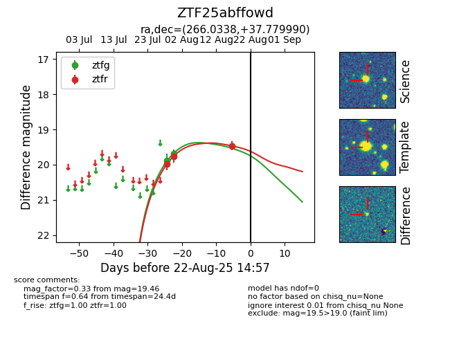

Target ZTF25abffowd at 2025-08-22 15:07, see:
FINK: fink-portal.org/ZTF25abffowd
Lasair: lasair-ztf.lsst.ac.uk/objects/ZTF25abffowd
ALeRCE: alerce.online/object/ZTF25abffowd
alt names
ZTF25abffowd (ztf,alerce)
coordinates:
equatorial (ra, dec) = (266.0338,+37.77999)
galactic (l, b) = (63.1659,+28.87900)
photometry
last atlaso=19.50, ztfg=19.68, ztfr=19.46
1 atlaso, 2 ztfg, 3 ztfr detections
